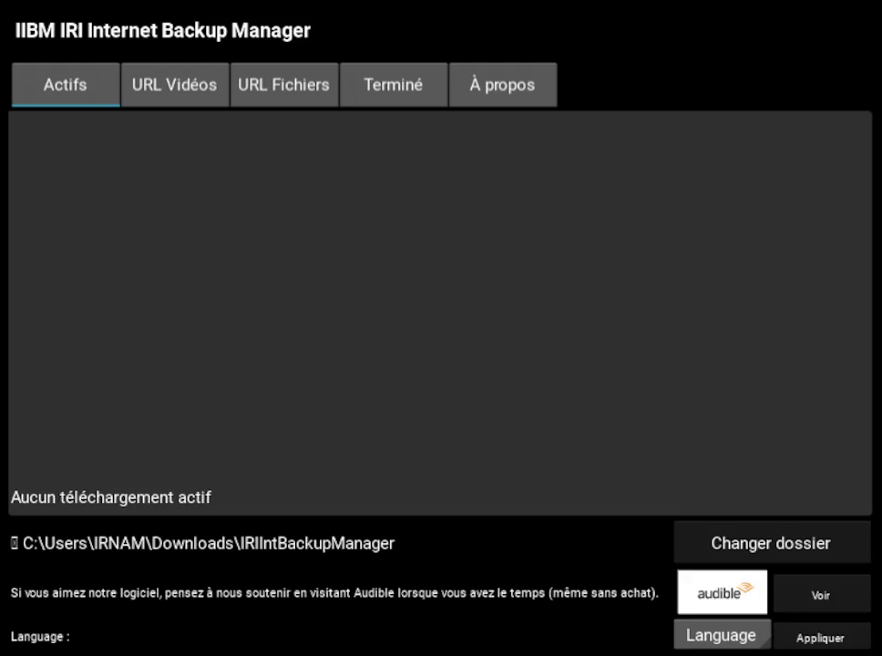
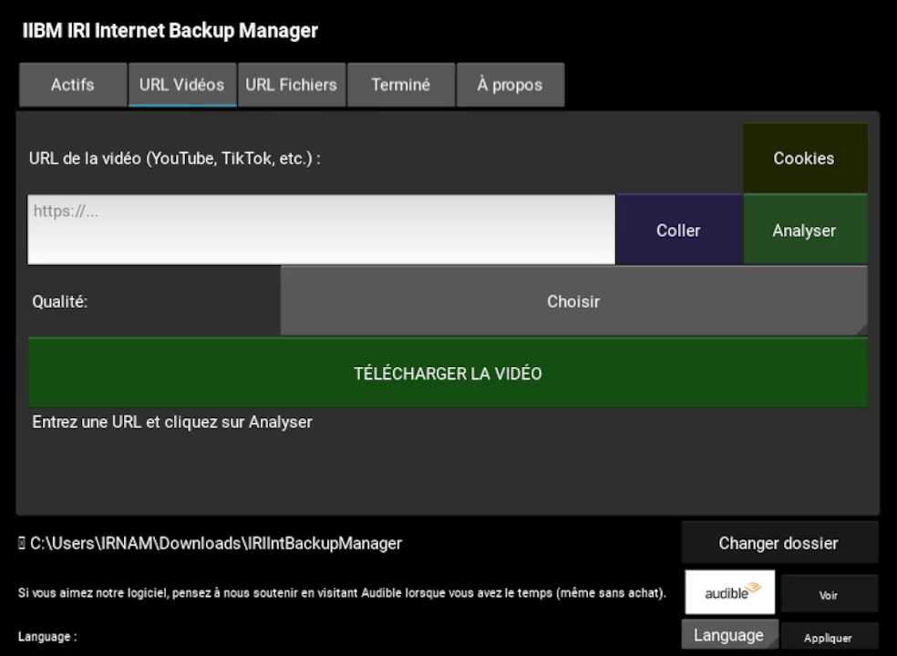
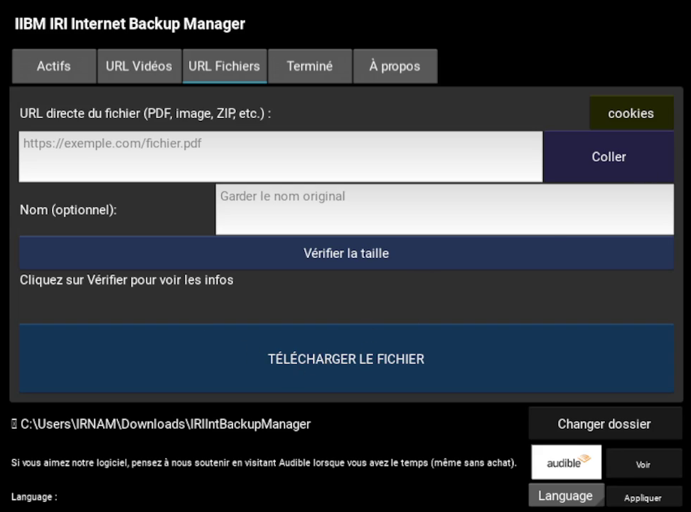

IIB Manager
Sauveur universel pour vidéos et fichiers
Sauvegardez vos propres vidéos (YouTube, TikTok, Vimeo, Dailymotion...)
et vos fichiers (PDF, images, ZIP) en un clic.
✨ Fonctionnalités
Vidéos
YouTube, TikTok, Dailymotion, Vimeo, Twitch, Facebook, Instagram...
Fichiers
PDF, images, ZIP, EXE, documents, audios...
Reprise
Téléchargements interrompus repris automatiquement
Multilingue
Français, English, العربية
Barre d'état
Se cache dans la barre des tâches comme IDM
Détection automatique
Capture automatique des URLs du presse-papiers
Support cookies
Pour vos connexions navigateurs
ffmpeg inclus
Merge vidéo/audio automatique
📥 Téléchargement
Logiciel portable - Aucune installation requise
Compatible Windows 7/8/10/11
Prérequis : Windows uniquement. ffmpeg inclus.
📸 Captures d'écran

Interface principale

Téléchargement vidéo

Téléchargements fichiers
❓ FAQ
Comment ça marche ?
Copiez une URL vidéo ou fichier, collez-la dans le logiciel, choisissez la qualité et téléchargez.
Il y'a une version trial ?
Oui, de 30 jours. L'abonnement n'est pas cher car c'est juste pour soutenir le projet.
Est-ce légal ?
L'outil est légal. L'utilisateur est responsable de ce qu'il télécharge.
Pourquoi utiliser IIB Manager ?
Simple, rapide, sans publicité.
Comment signaler un bug ?
Créez une issue sur GitHub ou contactez l'auteur par email.
Quelles sont les alternatives ?
IDM (payant), 4K Video Downloader (freemium), yt-dlp (CLI).
📜 Licence
IIB Manager - Licence propriétaire
Copyright © 2024 IRNAM MOHAMED - Tous droits réservés
Ce logiciel est la propriété de IRNAM MOHAMED. Il est protégé par le droit d'auteur et les lois internationales sur la propriété intellectuelle.
✅ Vous avez le droit de :
- Utiliser le logiciel sur vos ordinateurs personnels
- Faire une copie de sauvegarde du logiciel
- Utiliser la version d'essai gratuitement pendant 30 jours
❌ Vous n'avez PAS le droit de :
- Vendre, redistribuer ou louer le logiciel
- Désassembler, décompiler ou modifier le code source
- Contourner le système de licence
- Utiliser le logiciel pour des activités illégales
⚠️ Avertissement : L'utilisateur est seul responsable de l'utilisation qu'il fait du logiciel.
Le téléchargement de vidéos protégées par le droit d'auteur sans autorisation peut être illégal dans votre pays.
🙏 Crédits
IIB Manager utilise les bibliothèques et outils open-source suivants :
Bibliothèque de téléchargement vidéo - Sous licence Unlicense (Domaine public)
github.com/yt-dlp/yt-dlp
Bibliothèque HTTP pour Python - Sous licence Apache License 2.0
github.com/psf/requests
Outils de traitement multimédia - Sous licence GNU GPL v3.0
ffmpeg.org
Framework interface graphique - Sous licence MIT
kivy.org
Compilation de l'exécutable - Sous licence GPL v2.0
pyinstaller.org
Détection de types de fichiers - Sous licence MIT
Merci à tous ces projets open-source qui rendent ce logiciel possible !